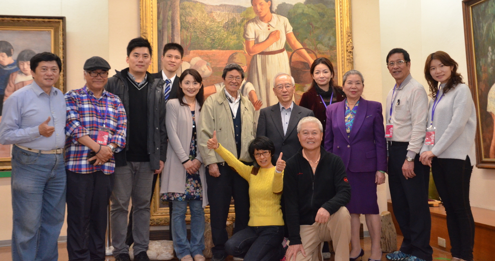
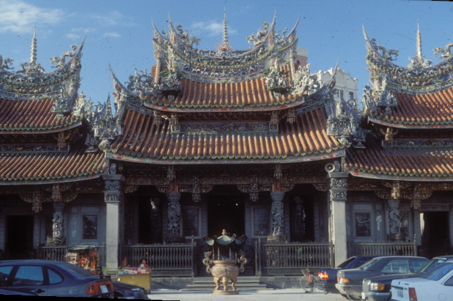
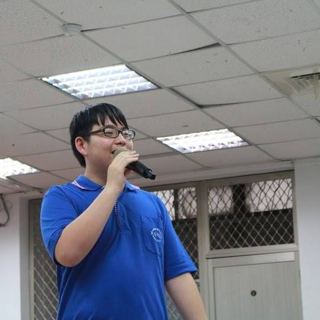
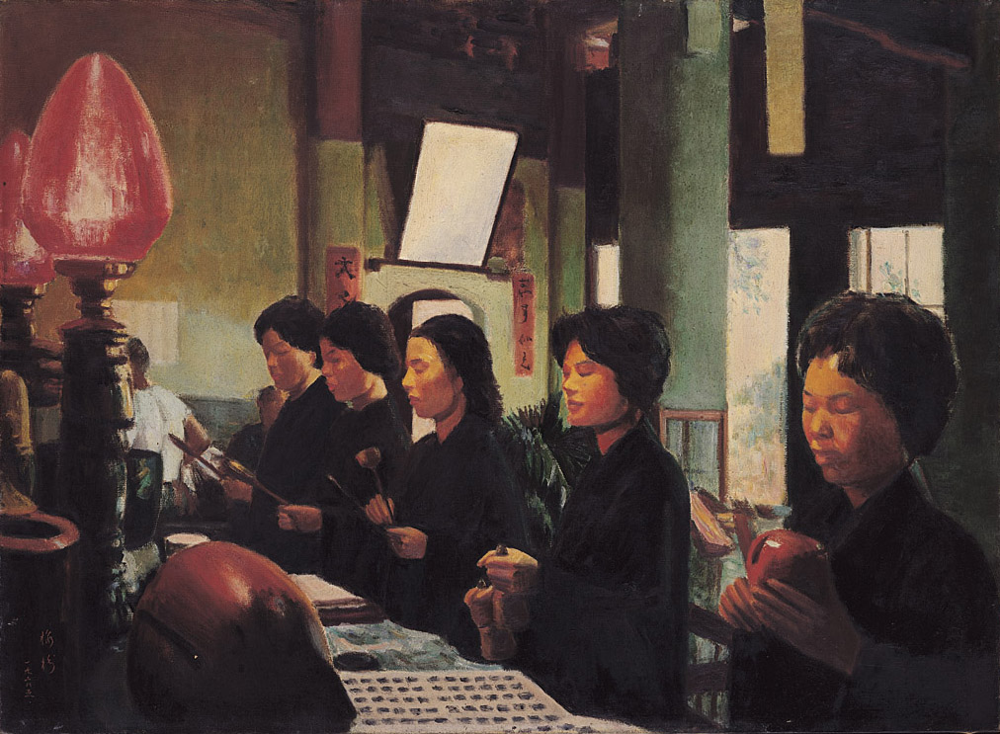

周邊景點
中文版首頁
文化活動
最新消息
周邊景點
在地商家
關於我們
紀念館
與我們合作
志工團隊
支持我們
李梅樹
畫家介紹
年度記事
數位館藏
線上美術館
文獻資料
開源 x 文史
語言選擇
中文
English
日本語
首頁 > 關於我們 > 周邊景點
周邊景點
清溪浣衣 1981
認識李梅樹
一位用生命照亮本土藝術的台灣畫家
了解更多

支持我們
您的支持，讓大家的藝術與精神，永遠傳承

祖師廟
東方藝術殿堂

線上美術館
在雲端，看見美
線上美術館
在雲端，看見美
線上美術館
在雲端，看見美
線上美術館
在雲端，看見美
線上美術館
在雲端，看見美
線上美術館
在雲端，看見美
線上美術館
在雲端，看見美
線上美術館
在雲端，看見美

開源ｘ文史
不只是藝術
了解更多
梅樹月
在三峽，品嚐時間的滋味
了解更多